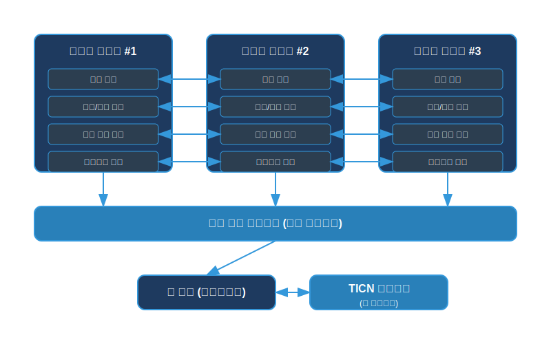
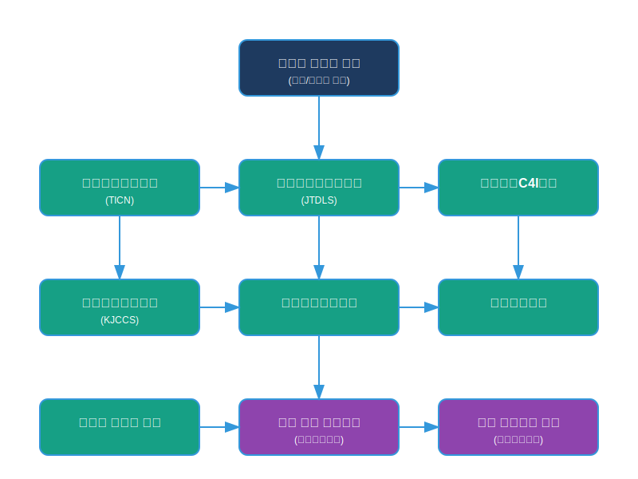
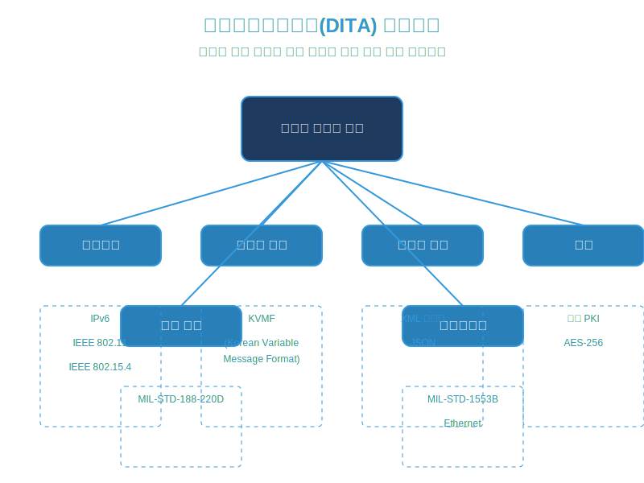

상호운용성 개요
통합형 전술 무전기 기반 협력적 재밍 대적 드론 방어체계는 기존 군 체계와의 원활한 연동 및 정보 교환을 위해 국방 표준을 준수하고 다양한 체계와의 상호운용성을 보장합니다. 본 체계는 독립적으로 운용될 수 있을 뿐만 아니라, 기존 지휘통제체계 및 방공체계와 연동하여 통합된 방어 능력을 제공합니다.
운용개념 및 체계 특성
운용개념도

통합형 무전기 간 연결과 메쉬 네트워크, TICN 네트워크와의 연동을 보여주는 운용개념도입니다. 각 무전기는 통신 모듈, 탐지/식별 모듈, 재밍 실행 모듈, 네트워크 모듈로 구성되어 있으며, 이들이 서로 연결되어 협력적으로 작동합니다.
체계운용방식
단독 운용
독립적인 통신 및 드론 방어 체계로 운용
합동 운용
육·해·공군 합동작전 시 통합 방어체계의 일부로 운용
연합 운용
연합작전 시 연합군 방어체계와 연동 운용 (NATO 표준 준수)
네트워크 이원화 계획
주 네트워크
전술정보통신체계(TICN) 기반 유·무선 네트워크
보조 네트워크
체계 내부 자체 메쉬 네트워크 (주 네트워크 장애 시 자동 전환)
연동성 및 정보교환
연동대상체계
직접연동 체계
- 전술정보통신체계(TICN)
- 합동전술데이터링크체계(JTDLS)
- 지상전술C4I체계
- 대공경보체계
- 저고도 레이더 체계
- 차기 대공 방어체계(미래확보예정)
간접연동 체계
- 합동지휘통제체계(KJCCS)
- 전장감시체계
- 방공지휘통제체계
- 군 위성통신체계
- 국방 인공지능 체계(미래확보예정)
연동개념도

통합형 무전기 체계와 다양한 외부 시스템 간의 연동 관계를 보여주는 연동개념도입니다. 직접연동 체계와 간접연동 체계가 계층적으로 구성되어 있으며, 각 체계 간의 정보 흐름을 나타냅니다.
표준 및 아키텍처
국방정보기술표준(DITA)

통합형 무전기 체계가 준수하는 국방정보기술표준(DITA)을 보여주는 다이어그램입니다. 네트워크, 메시지 형식, 데이터 교환, 보안, 무선 통신, 인터페이스 등 다양한 표준을 준수하여 상호운용성을 보장합니다.
준수 표준 상세
네트워크
- IPv6
- IEEE 802.11
- IEEE 802.15.4
메시지 형식
- KVMF(Korean Variable Message Format)
데이터 교환
- XML 스키마
- JSON
보안
- 국방 PKI
- AES-256
무선 통신
- MIL-STD-188-220D
인터페이스
- MIL-STD-1553B
- Ethernet